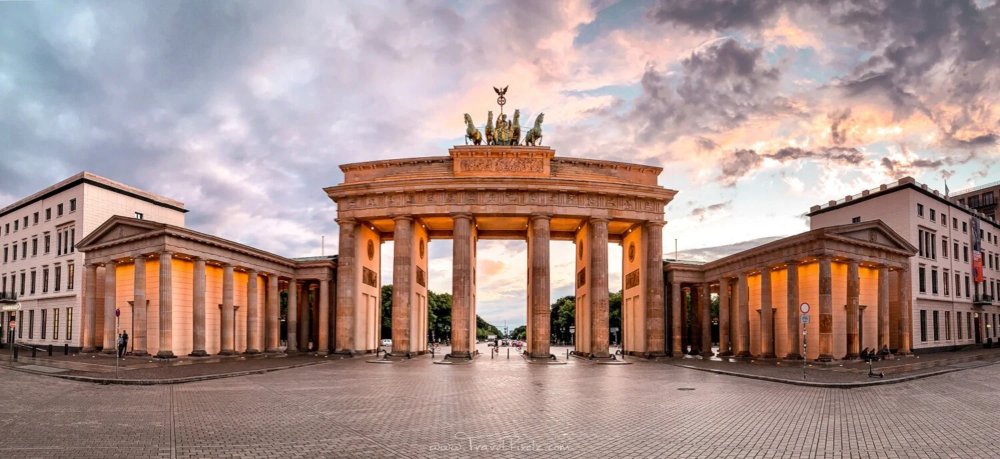
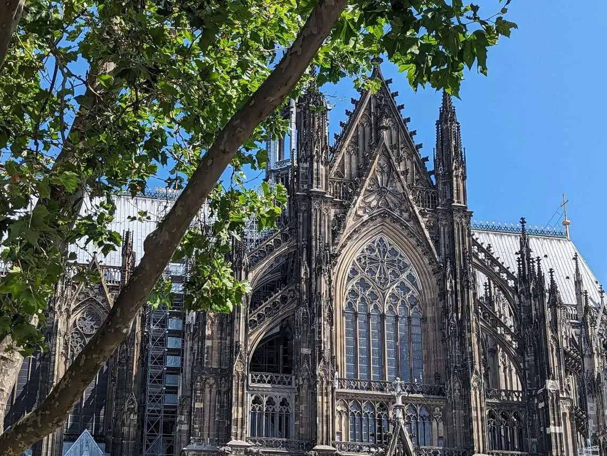

Germany
Germany through the ages
- Early Germanic Tribes: Germany was originally inhabited by Germanic tribes. They lived in small communities and often fought the Romans.
- Holy Roman Empire:For many centuries, Germany was part of the Holy Roman Empire. It was a collection of states ruled by emperors.
- German Unification (1871): Germany became a unified nation in 1871 under Otto von Bismarck. This made Germany a strong European power
- World War I & II: Germany played a central role in both world wars. After World War II, the country was divided into East and West Germany.
- Modern Germany (1990–Today): Germany was reunified in 1990 after the fall of the Berlin Wall. Today, it is a leading country in Europe.
Famous Sights
Brandenburg Gate (Berlin):
The Brandenburg Gate is one of Germany’s most famous landmarks. It is a symbol of unity and history.
Neuschwanstein Castle:

This fairytale castle is located in Bavaria. It inspired Disney castles and attracts millions of visitors.
Cologne Cathedral:
Cologne Cathedral is a UNESCO World Heritage Site. Visitors can admire its Gothic architecture and climb the tower.
German food
- Bratwurst: Bratwurst is a popular German sausage. It is often served with mustard and bread.
- Schnitzel: Schnitzel is a breaded and fried meat dish. It is commonly eaten with potatoes or salad.
- Pretzel (Brezel): Pretzels are soft, salty baked bread. They are especially popular in southern Germany.
- Sauerkraut: Sauerkraut is fermented cabbage served as a side dish. It is traditional and healthy.
- Black Forest Cake: This chocolate cake is made with cherries and cream. It is one of Germany’s most famous desserts.
Tips for travelers
- Punctuality: Germans value being on time. Arriving late is considered rude.
- Transportation: Public transport is efficient and well organized. Trains connect most cities and towns.
- Cash & Payments: Cash is still commonly used in small shops. Always carry some euros with you.
- Recycling Rules: Germany has strict recycling laws. Follow the signs for proper waste disposal.
- Language: German is the main language, but many people speak English. Learning basic phrases is appreciated.